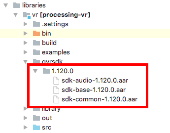

Contributions Week-I
Hello World.!
I'm Syam Sundar K and in this summer I'll be working on an AR Library for Processing-Android which is a Library that will help creating Augmented Reality applications in Processing through Android Mode.
My first commitment was to create the backbone for the library and make it easy to access from the standard processing interface through the Android-mode.
First of all before diving in, I made the clear understanding of the hierarchy .i.e., directory structure in which the the Java classes has to be placed so that I get a seamless import into the Processing Interface. I looked into the Ketai Library which is the library used to acquire sensor data from the Android Device in real time which was created by my mentor Jesus Duran. I mapped the File structure in the src directory with the import statements made in the Interface. This gave me a clear idea of how the stucture has to be maintained.
Later, I had to get the necessary raw files i.e., aar and jar files to make the Library. In case of VR, the AAR files where present in the GVR SDK by default which can be obtained by cloning the repo and acquiring the essential files but in the case of ARCore, the release didn't have the aar file by default and hence I did a pull from the Maven for ARCore aar file - which by unzipping gave me the essential jar files.

First of all I started with keeping the AR Library as one of the Contributed Libraries to make sure that all the assumptions were correct and make corresponding imports of the Library through the UI.
After making the bare bones work as expected, I started working on my own repo fo the AR Library.
Github Link : https://github.com/SyamSundarKirubakaran/processing-ar
Started off by creating the build files for the Library .i.e., build.gradle and build.xml files specific to the Library and creating a class to see if the jar files are created as expected. Runnning the ant build gave me a couple of error which was taken care of and as it reached the stable state I moved it to the in-built libraries in the Android-mode along side VR.